Supportworks ITSM SelfService User Guide
What is SelfService?
SelfService is a Web-based application, which allow you to access your organisation's IT support and IT services, at any time of the day.
To access SelfService, logon via web browser either on the desktop or on a mobile device, using the address provided by your systems administrator.
SelfService functions
You can use SelfService to request IT support ("raising Support Requests"). For example, you can report a problem you are having with your email access.
You can also use SelfService to request a particular set of IT services ("Raising Service Requests"). For example, you can request a set of IT services for a new employee at your organisation.
Other SelfService functions include:
- Accessing public announcements on service availability
- Track the status of your requests, and receive updates on open requests
- Send feedback on requests to your organisation's Service Desk
- Search your organisation's Knowledgebase for an answer to your query or problem.
These functions are described within this Guide.
SelfService for Management and Business owners
In addition to the standard functions outlined above, SelfService functionality also allow managers to view requests raised by their team members, and authorise those requests if required.
Service Business Owners can also view business details for Services they own.
SelfService Benefits
Having a single location to create and monitor your contacts with your organisation's IT Service Desk makes it much easier for you to organise and track such contact; this avoids the need for you to keep track of emails or telephone calls.
All contacts (requests) are handled consistently, and are stored in a single location - so you always know where to look, to find out what is happening for a particular request you made.
Launching SelfService
To access SelfService:
- Open your browser, and enter the correct URL (supplied by your systems administrator).
- Enter a customer's ID and password when prompted.
- For example:
- 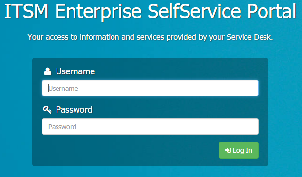
- The Home page will then be displayed.
Once customers have logged in, they can view / raise requests, update existing requests, and search the KnowledgeBase.
Note: SelfService functions and displays can all be configured by your systems administrator, to meet your organisation's requirements.
Home page
The Home page provides an overview of current request information, plus navigation and other functions.
For example:
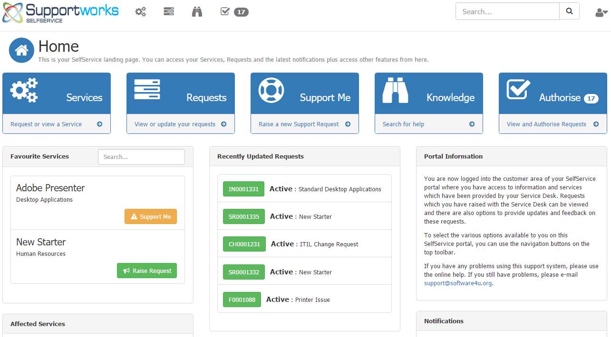
This shows:
- Navigation options: these allow you to navigate through the SelfService system. Specific options are described in other sections of this Guide.
- A combined Search area is provided at the top of the screen which will gather results from Services, Requests and the Knowledgebase.
- Information Board: a welcome message as defined by the Service Desk team.
- Recently Updated Requests: a summary of your requests with recent call activity.
- Favourite Services you can select Services which you would like to appear in this list.
- Notifications: Any relevant notifications of your Service and CI availability and notifications of any pending authorisations for you to action. The Service Desk can also provide general updates through this feature.
My Services
The My Services page displays your services (subscribed and unsubscribed), along with a Service Details display and a list of Active and Closed Requests for the Service. There are also search and filtering options to help you find specific Services.
For example:
![[image-003.png]](images/image-003.png)
The exact views available to you are defined by the Service Desk team, and can include:
Using Services
For each service you use, you can:
- View Service Details: select that service to show details.
- Request Support: to raise a Support Request for a Service, select Support Me.
- Request Service: to raise a Service Request for a Service, select Raise Request.
(Some of these functions may not be available on some Services, depending on how your Service Desk team has set up those Services)
These functions are described in the following sections.
Viewing Service Details
To view details of subscribed Services, select the entry for the relevant Service.
This will display the details for that Service.
For example:
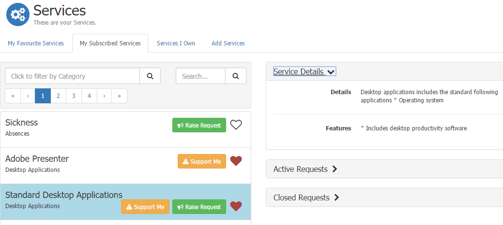
From here, you can:
- View summary details for that Service
- View your Active and Closed Service Requests for that Service
Raising Support Requests
To raise a Support Request for a particular Service, click on the Support Me button when the Service is highlighted.
Follow relevant prompts and enter details as requested, then press Submit when finished.
Raising Service Requests
To raise a Service Request for a particular Service, click on the Raise Request button when the Service is highlighted.
For example:
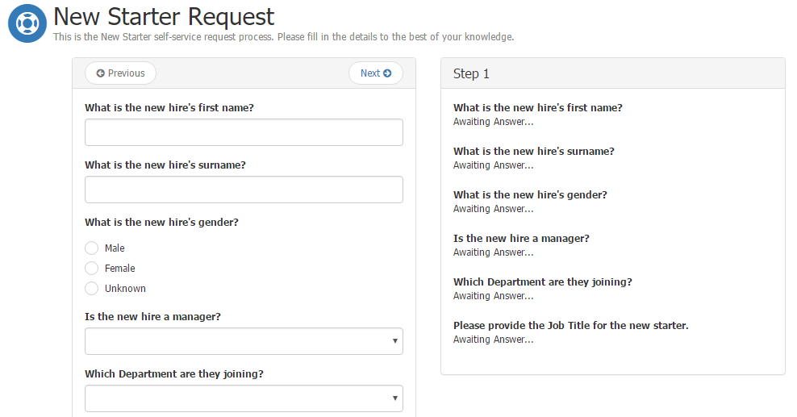
Follow any prompts and fill in relevant details for this Request - you may need to go through several steps, depending on the process.
If there are optional components or additions to this Service, you will need to select these as well, as appropriate.
Finally, click on Submit to raise the Request.
Viewing Active / Closed Requests
To view a list of your current Active / Closed Service Requests, select the relevant, Active Request or Closed Requests, section after highlighting that Service.
For example:
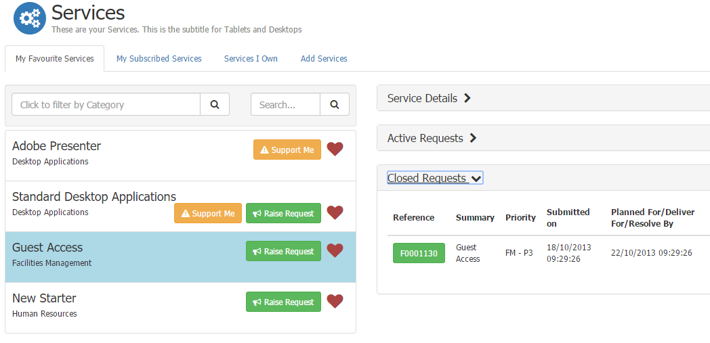
For each Request of that Service type, this display shows summary details for that Request.
To view full details of specific Service Requests, select the reference number - this will pull up details as described in the My Requests section.
Viewing Services I own
In the Services I own list, Business Owners can click on a listed Business Service to view the details for that Service.
Business Owners can view information about:
- Parent / Child dependencies for that Service
- Service Options (components of that Service)
Business Owners may also see:
- Demand Management information including actual users, projected users, difference, and maximum users.
- Service Levels
- Request Cost Breakdown: this shows a breakdown of the individual Request related costs.
- Service Cost Breakdown: this shows a breakdown of the individual Service related costs.
Viewing Services I can subscribe to
Unsubscribed Services are those Services to which the user can subscribe - they are available - but has not currently subscribed to.
These Services are listed in the Add Services section of the Services area.
Subscribing to a Service
To subscribe to a Service:
- Select Subscription
- You will then be prompted for various details before being able to Submit the request to Subscribe to this Service.
- Enter any details requested at this point (as defined by your Service Desk team)
- Select Submit to generate a Subscription Request, which will be processed by the Service Desk team.
- Once this Subscription Request has been processed and approved - according to procedures defined by your organisation - that Service will then appear on your My Services list - you can then submit Service Requests for that Service as described previously.
Support Me
General Support Requests can be logged by clicking Support Me, entering a summary and a description of the request, then clicking on Submit. These prompts may differ as they are controlled by your Service Desk.
For example:
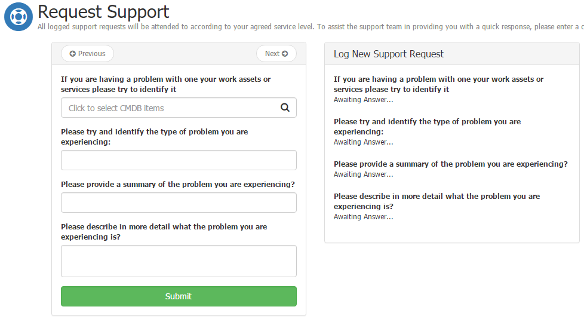
My Requests / My team's Requests
This shows details of all requests (Incidents, Changes and Service Requests) for:
- that customer
- that customer's site or organisation (if the customer has permissions set)
(The My team's requests option shows similar information for that customer's team, if the customer is a manager)
For example:
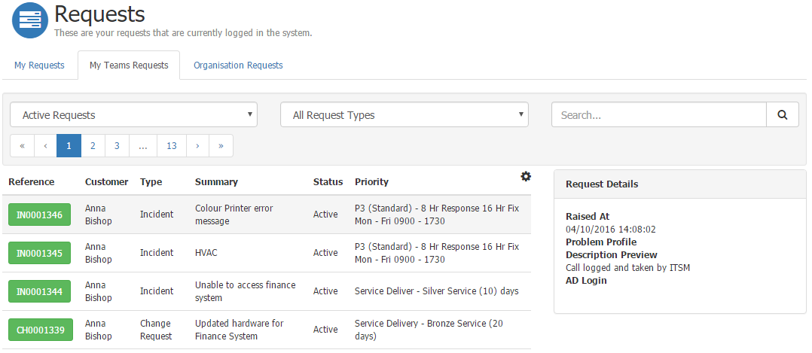
You can customise / filter this list - for example, to display specific request types - using the fields at the top of this list. The search option can also be used to quickly find a request.
If you have logged requests against other organisations, you may also see an Organisation Requests tab, listing those requests.
Viewing request details
Customers can click on a request reference to display more details for that particular request.
For example:
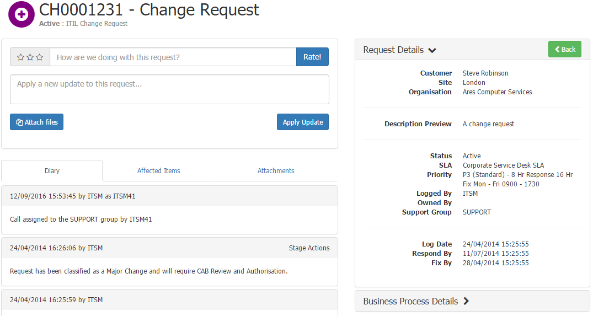
Business Process Details
For requests with associated business processes, the Business Process Details area shows the current status and stage information for the process (workflow) used.
For example:
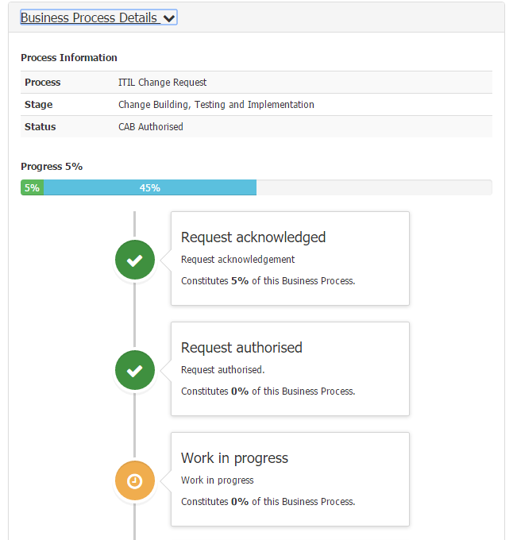
Service Components
For Service Requests, this area lists any components within that Service Request.
Update area
The Update area, at the top of the Request Details, allows customers to submit an update, attach files and leave feedback to that particular request. Customer rating and feedback (complaints and compliments) submitted via this mechanism will be tied to the request. The feedback provided is visible with the Service Desk and can be reported against.
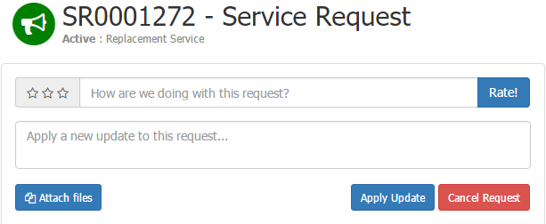
Other tabs
There are several other tabs within the Request Details screen:
- The Diary tab shows the Diary for that request (for all public entries in the Call Diary).
- The Attachments tab allows you to view attached files.
My Authorisations
This shows authorisations required by you and your manager, as defined for the Business Processes used by your organisation.
For example:
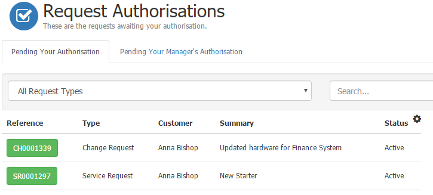
Authorising requests
To authorise (or reject) a request, click on the Request reference for the relevant entry in the authorisations list.
This shows:
- Relevant pricing information for that Service Request
- Authorisation prompts and decisions
For example:
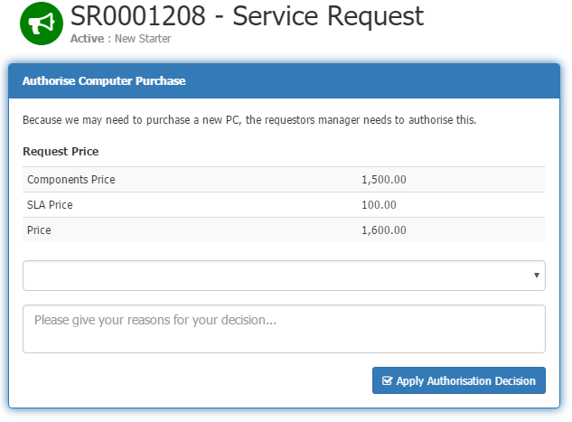
To authorise that stage of the request, select Authorised from the drop-down list, enter any relevant accompanying text for that decision, then click Apply Authorisation Decision.
(You can also submit other authorisation decisions such as Rejected to progress this request)
The request will then be progressed as appropriate (and the Authorisation Decision tab will no longer be displayed in that request's details).
Knowledgebase
This allows customers to search your Knowledgebase system.
Enter your knowledge query as appropriate, then select the relevant Knowledge Article(s) to view from the results displayed.
My Profile
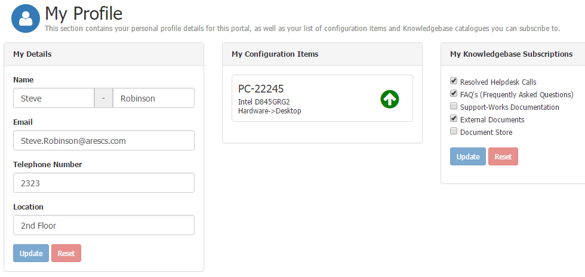
This allows you to:
- Create / change your contact details
- View Knowledgebase subscriptions: that is, where you have subscribed to get notifications where knowledgebase articles have been updated
- View a list of the Configuration Items owned or associated to you.
Administration
The presence of a "cog" symbol in certain areas indicates that there are Administration level configuration options for that area.
Please note the following
- This feature is only available if you have been granted the relevant right
- You will need administrative knowledge of Supportworks to make appropriate changes
- Alterations will be applied to all users of the SelfService Instance
![[image-018.png]](images/image-018.png)
The following features are provided within the Table Configuration form, which opens when the cog is pressed:
- Determine the database Table Name from which the records in the table will be populated
- Specify additional database tables through Table Joins from which data can be displayed
- The columns to be included in the data can be defined in the section Query Columns. This section also allows you to control features such as the ability to Hide or Search on a given column. It is also possible to indicate Location of the column; either in the main table or in the details area.
- The sequencing of the data can be controlled in the section Order your results by
- The number of records to display on each page can be set in Number of records to show on each page
- There are also a number of settings relating to scripts which are called to acquire data. Alteration of these require knowledge of the available scripts on the Supportworks Server
- Count Records Stored Query
- Records Stored Query